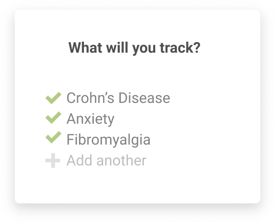
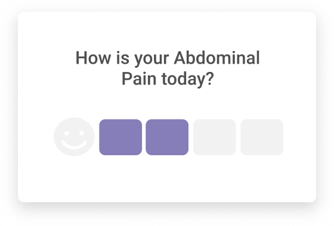
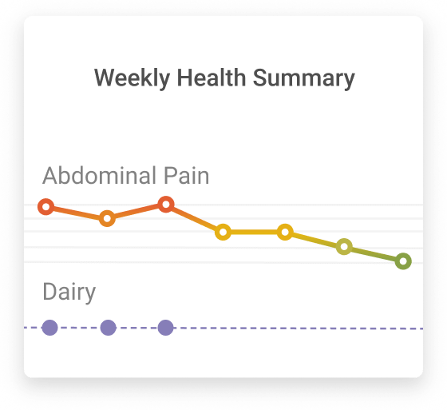

Food
Choose from over 200,000 foods to find sensitivities and eat healthier.
Flaredown is the most comprehensive symptom tracker ever created.
Choose from over 200,000 foods to find sensitivities and eat healthier.
Track dosage, find side effects, and test out your meds.
Thousands of supplements and alternative interventions.
Log stress, mood, depression, anxiety and much more.
We auto-track temperature, humidity, precipitation, and more for you.
Exercise, sleep, habits, and other activities.
If we don't have it, you can add it.
You are unique. Monitor the health issues that matter to you all in one place.
Flaredown will check in with you daily to make consistent tracking easy.
Send a visual health history to your doctor, family, and friends.
Share advice with people like you.
I've been using this app for years to track symptoms & medication. So useful!!! https://t.co/yfRpYYCfdx
— Lia Pas (@lia_pas) June 29, 2017
@flaredown app is amazing. Track symptoms, meds, pain levels, journal, etc. Per day. It's been amazing - definitely would recommend.
— abby sams 🦈 (@abby__sams) April 9, 2017
Most of us here at @smashthestigma_ have downloaded this app to keep track of our own illnesses and symptoms. We all highly recommend it! https://t.co/N19aVDTlcK
— SmashtheStigmaCanada (@smashthestigma_) September 16, 2017
No. Your health history can only be seen by you. The only way another Flaredown user even knows you exist is if you choose to post in the chat section.
Yes, but we remove all personally identifiable information before doing so. Our goal is to use the data to find better ways of treating chronic illness, so we share fully anonymized data with researchers and data scientists. You can check out the exact dataset they get access to right here.
We don't! Initially, Flaredown was funded by a crowdfunding campaign. It's now supported by creator Logan Merriam.
Yes! Flaredown supports all conditions, here's a small selection of the thousands that our users are tracking: